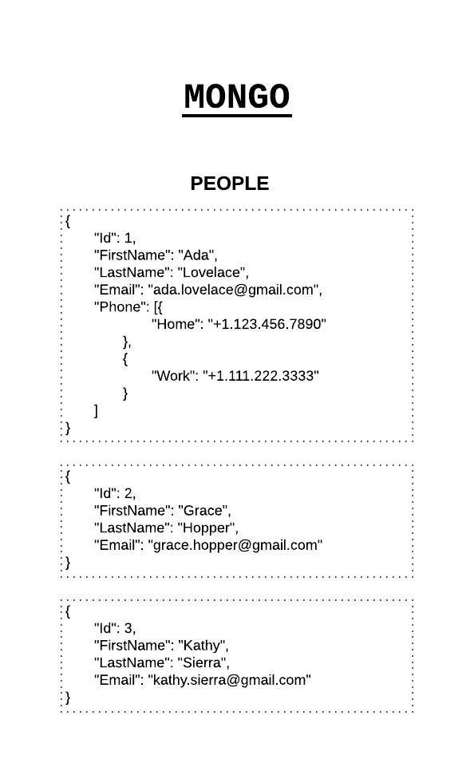
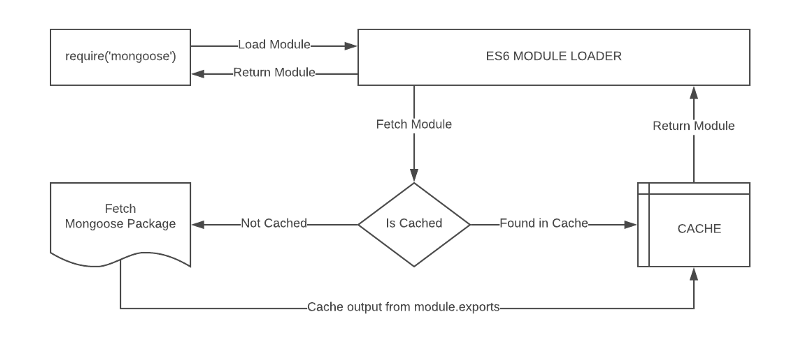

Mongoose for MongoDB
Object Mapping between Node and MongoDB managed via Mongoose

MongoDB is a schema-less NoSQL document database. It means you can
store JSON documents in it, and the structure of these documents
can vary as it is not enforced like SQL databases. This is one of
the advantages of using NoSQL as it speeds up application
development and reduces the complexity of deployments.
Below is an example of how data is stored in Mongo vs. SQL
Database:

Collections
‘Collections’ in Mongo are equivalent to tables in
relational databases. They can hold multiple JSON documents.
Documents
‘Documents’ are equivalent to records or rows of data in
SQL. While a SQL row can reference data in other tables, Mongo
documents usually combine that in a document.
Fields
‘Fields’ or attributes are similar to columns in a SQL
table.
Schema
While Mongo is schema-less, SQL defines a schema via the table
definition. A Mongoose ‘schema’ is a document data
structure (or shape of the document) that is enforced via the
application layer.
Models
‘Models’ are higher-order constructors that take a schema
and create an instance of a document equivalent to records in a
relational database.
Database Connection
Create a file ./src/database.js under the project root.
Next, we will add a simple class with a method that connects to the database.
Your connection string will vary based on your installation.
Next, we will add a simple class with a method that connects to the database.
Your connection string will vary based on your installation.
let mongoose = require("mongoose");
const server = "127.0.0.1:27017"; // REPLACE WITH YOUR DB SERVER
const database = "fcc-Mail"; // REPLACE WITH YOUR DB NAME
class Database {
constructor() {
this._connect();
}
_connect() {
mongoose
.connect(`mongodb://${server}/${database}`)
.then(() => {
console.log("Database connection successful");
})
.catch((err) => {
console.error("Database connection error");
});
}
}
module.exports = new Database();
The require(‘mongoose’) call above returns a Singleton object. It
means that the first time you call require(‘mongoose’), it is
creating an instance of the Mongoose class and returning it. On
subsequent calls, it will return the same instance that was
created and returned to you the first time because of how module
import/export works in ES6.

Similarly, we have turned our Database class into a singleton by
returning an instance of the class in the
module.exports statement because we only need a single
connection to the database. ES6 makes it very easy for us to
create a singleton (single instance) pattern because of how the
module loader works by caching the response of a previously
imported file.
Mongoose Schema vs. Model
A Mongoose model is a wrapper on the Mongoose schema. A Mongoose
schema defines the structure of the document, default values,
validators, etc., whereas a Mongoose model provides an interface
to the database for creating, querying, updating, deleting
records, etc.
Creating a Mongoose model comprises primarily of three parts:
Creating a Mongoose model comprises primarily of three parts:
1. Referencing Mongoose
let mongoose = require('mongoose')
This reference will be the same as the one that was returned when
we connected to the database, which means the schema and model
definitions will not need to explicitly connect to the database.
2. Defining the Schema
A schema defines document properties through an object where the
key name corresponds to the property name in the collection.
let emailSchema = new mongoose.Schema({
email: String
})
Here we define a property called email with a schema type String
which maps to an internal validator that will be triggered when
the model is saved to the database. It will fail if the data type
of the value is not a string type.
The following Schema Types are permitted:
The following Schema Types are permitted:
- Array
- Boolean
- Buffer
- Date
- Mixed (A generic / flexible data type)
- Number
- ObjectId
- String
Mixed and ObjectId are defined under
require(‘mongoose’).Schema.Types
3. Exporting a Model
We need to call the model constructor on the Mongoose instance and
pass it the name of the collection and a reference to the schema
definition.
module.exports = mongoose.model('Email', emailSchema)
Let’s combine the above code into ./src/models/email.js to
define the contents of a basic email model:
let mongoose = require("mongoose");
let emailSchema = new mongoose.Schema({
email: String,
});
module.exports = mongoose.model("Email", emailSchema);
A schema definition should be simple, but its complexity is
usually based on application requirements. Schemas can be reused
and they can contain several child-schemas too. In the example
above, the value of the email property is a simple value type.
However, it can also be an object type with additional properties
on it.
We can create an instance of the model we defined above and
populate it using the following syntax:
let EmailModel = require("./email");
let msg = new EmailModel({
email: "ada.lovelace@gmail.com",
});
Let’s enhance the Email schema to make the email property a
unique, required field and convert the value to lowercase before
saving it. We can also add a validation function that will ensure
that the value is a valid email address. We will reference and use
the validator library installed earlier.
let mongoose = require("mongoose");
let validator = require("validator");
let emailSchema = new mongoose.Schema({
email: {
type: String,
required: true,
unique: true,
lowercase: true,
validate: (value) => {
return validator.isEmail(value);
},
},
});
module.exports = mongoose.model("Email", emailSchema);
Basic Operations
Mongoose has a flexible API and provides many ways to accomplish a
task. We will not focus on the variations because that is out of
scope for this article, but remember that most of the operations
can be done in more than one way either syntactically or via the
application architecture.
Create Record
Let’s create an instance of the email model and save it to the
database:
let EmailModel = require('./email')
let msg = new EmailModel({
email: 'ADA.LOVELACE@GMAIL.COM'
})
msg.save()
.then(doc => {
console.log(doc)
})
.catch(err => {
console.error(err)
})
The result is a document that is returned upon a successful save:
{
_id: 5a78fe3e2f44ba8f85a2409a,
email: 'ada.lovelace@gmail.com',
__v: 0
}
The following fields are returned (internal fields are prefixed
with an underscore):
- The _id field is auto-generated by Mongo and is a primary key of the collection. Its value is a unique identifier for the document.
- The value of the email field is returned. Notice that it is lower-cased because we specified the lowercase:true attribute in the schema.
- __v is the versionKey property set on each document when first created by Mongoose. Its value contains the internal revision of the document.
If you try to repeat the save operation above, you will get an
error because we have specified that the email field should be
unique.
Fetch Record
Let’s try to retrieve the record we saved to the database earlier.
The model class exposes several static and instance methods to
perform operations on the database. We will now try to find the
record that we created previously using the find method and pass
the email as the search term.
EmailModel
.find({
email: 'ada.lovelace@gmail.com' // search query
})
.then(doc => {
console.log(doc)
})
.catch(err => {
console.error(err)
})
The document returned will be similar to what was displayed when
we created the record:
{
_id: 5a78fe3e2f44ba8f85a2409a,
email: 'ada.lovelace@gmail.com',
__v: 0
}
Update Record
Let’s modify the record above by changing the email address and
adding another field to it, all in a single operation. For
performance reasons, Mongoose won’t return the updated document so
we need to pass an additional parameter to ask for it:
EmailModel
.findOneAndUpdate(
{
email: 'ada.lovelace@gmail.com' // search query
},
{
email: 'theoutlander@live.com' // field:values to update
},
{
new: true, // return updated doc
runValidators: true // validate before update
})
.then(doc => {
console.log(doc)
})
.catch(err => {
console.error(err)
})
The document returned will contain the updated email:
{
_id: 5a78fe3e2f44ba8f85a2409a,
email: 'theoutlander@live.com',
__v: 0
}
Delete Record
We will use the findOneAndRemove call to delete a record.
It returns the original document that was removed:
EmailModel
.findOneAndRemove({
email: 'theoutlander@live.com'
})
.then(response => {
console.log(response)
})
.catch(err => {
console.error(err)
})
Helpers
We have looked at some of the basic functionality above known as
CRUD (Create, Read, Update, Delete) operations, but Mongoose also
provides the ability to configure several types of helper methods
and properties. These can be used to further simplify working with
data.
Let’s create a user schema in ./src/models/user.js with the fieldsfirstName and lastName:
Let’s create a user schema in ./src/models/user.js with the fieldsfirstName and lastName:
let mongoose = require('mongoose')
let userSchema = new mongoose.Schema({
firstName: String,
lastName: String
})
module.exports = mongoose.model('User', userSchema)
Virtual Property
A virtual property is not persisted to the database. We can add it
to our schema as a helper to get and set values.
Let’s create a virtual property called fullName which can be used to set values on firstName and lastName and retrieve them as a combined value when read:
Let’s create a virtual property called fullName which can be used to set values on firstName and lastName and retrieve them as a combined value when read:
userSchema.virtual('fullName').get(function() {
return this.firstName + ' ' + this.lastName
})
userSchema.virtual('fullName').set(function(name) {
let str = name.split(' ')
this.firstName = str[0]
this.lastName = str[1]
})
Callbacks for get and set must use the function keyword as we need
to access the model via the this keyword. Using fat arrow
functions will change what this refers to.
Now, we can set firstName and lastName by assigning a value to fullName:
Now, we can set firstName and lastName by assigning a value to fullName:
let model = new UserModel()
model.fullName = 'Thomas Anderson'
console.log(model.toJSON()) // Output model fields as JSON
console.log()
console.log(model.fullName) // Output the full name
The code above will output the following:
{ _id: 5a7a4248550ebb9fafd898cf,
firstName: 'Thomas',
lastName: 'Anderson' }
Thomas Anderson
Instance Methods
We can create custom helper methods on the schema and access them
via the model instance. These methods will have access to the
model object and they can be used quite creatively. For instance,
we could create a method to find all the people who have the same
first name as the current instance.
In this example, let’s create a function to return the initials for the current user. Let’s add a custom helper method called getInitials to the schema:
In this example, let’s create a function to return the initials for the current user. Let’s add a custom helper method called getInitials to the schema:
userSchema.methods.getInitials = function() {
return this.firstName[0] + this.lastName[0]
}
This method will be accessible via a model instance:
let model = new UserModel({
firstName: 'Thomas',
lastName: 'Anderson'
})
let initials = model.getInitials()
console.log(initials) // This will output: TA
Static Methods
Similar to instance methods, we can create static methods on the
schema. Let’s create a method to retrieve all users in the
database:
userSchema.statics.getUsers = function() {
return new Promise((resolve, reject) => {
this.find((err, docs) => {
if(err) {
console.error(err)
return reject(err)
}
resolve(docs)
})
})
}
Calling getUsers on the Model class will return all the
users in the database:
UserModel.getUsers()
.then(docs => {
console.log(docs)
})
.catch(err => {
console.error(err)
})
Adding instance and static methods is a nice approach to implement
an interface to database interactions on collections and records.
Middleware
Middleware are functions that run at specific stages of a
pipeline. Mongoose supports middleware for the following
operations:
- Aggregate
- Document
- Model
- Query
For instance, models have pre and post functions that take two
parameters:
- Type of event (‘init’, ‘validate’, ‘save’, ‘remove’)
- A callback that is executed with this referencing the model instance
Let’s try an example by adding two fields called
createdAt and updatedAt to our schema:
let mongoose = require('mongoose')
let userSchema = new mongoose.Schema({
firstName: String,
lastName: String,
createdAt: Date,
updatedAt: Date
})
module.exports = mongoose.model('User', userSchema)
When model.save() is called, there is a
pre(‘save’, …) and post(‘save’, …) event that is
triggered. For the second parameter, you can pass a function that
is called when the event is triggered. These functions take a
parameter to the next function in the middleware chain.
Let’s add a pre-save hook and set values for createdAt and updatedAt:
Let’s add a pre-save hook and set values for createdAt and updatedAt:
userSchema.pre('save', function (next) {
let now = Date.now()
this.updatedAt = now
// Set a value for createdAt only if it is null
if (!this.createdAt) {
this.createdAt = now
}
// Call the next function in the pre-save chain
next()
})
Let’s create and save our model:
let UserModel = require('./user')
let model = new UserModel({
fullName: 'Thomas Anderson'
}
msg.save()
.then(doc => {
console.log(doc)
})
.catch(err => {
console.error(err)
})
You should see values for createdAt and updatedAt when the record
that is created is printed:
{ _id: 5a7bbbeebc3b49cb919da675,
firstName: 'Thomas',
lastName: 'Anderson',
updatedAt: 2022-02-08T02:54:38.888Z,
createdAt: 2022-02-08T02:54:38.888Z,
__v: 0 }
Plugins
Suppose that we want to track when a record was created and last
updated on every collection in our database. Instead of repeating
the above process, we can create a plugin and apply it to every
schema.
Let’s create a file ./src/model/plugins/timestamp.js and replicate the above functionality as a reusable module:
Let’s create a file ./src/model/plugins/timestamp.js and replicate the above functionality as a reusable module:
module.exports = function timestamp(schema) {
// Add the two fields to the schema
schema.add({
createdAt: Date,
updatedAt: Date
})
// Create a pre-save hook
schema.pre('save', function (next) {
let now = Date.now()
this.updatedAt = now
// Set a value for createdAt only if it is null
if (!this.createdAt) {
this.createdAt = now
}
// Call the next function in the pre-save chain
next()
})
}
To use this plugin, we simply pass it to the schemas that should
be given this functionality:
let timestampPlugin = require('./plugins/timestamp')
emailSchema.plugin(timestampPlugin)
userSchema.plugin(timestampPlugin)
Query Building
Mongoose has a very rich API that handles many complex operations
supported by MongoDB. Consider a query where we can incrementally
build query components.
In this example, we are going to:
In this example, we are going to:
- Find all users
- Skip the first 100 records
- Limit the results to 10 records
- Sort the results by the firstName field
- Select the firstName
- Execute that query
UserModel.find() // find all users
.skip(100) // skip the first 100 items
.limit(10) // limit to 10 items
.sort({firstName: 1} // sort ascending by firstName
.select({firstName: true} // select firstName only
.exec() // execute the query
.then(docs => {
console.log(docs)
})
.catch(err => {
console.error(err)
})
Closing
We have barely scratched the surface exploring some of the
capabilities of Mongoose. It is a rich library full of useful and
and powerful features that make it a joy to work with data models
in the application layer.
While you can interact with Mongo directly using Mongo Driver, Mongoose will simplify that interaction by allowing you to model relationships between data and validate them easily.
While you can interact with Mongo directly using Mongo Driver, Mongoose will simplify that interaction by allowing you to model relationships between data and validate them easily.